白老牛｜徳寿 しんら亭（德壽）
札幌市中央區南3条西5丁目14・三条美松ビル 2F｜薄野站步行約 5 分鐘
約 ¥5,000–10,000／人
特色／必吃：北海道品牌牛「白老牛」燒肉，主打自家牧場嚴選黑毛和牛；可點白老牛拼盤、特選牛排部位。官方菜單列有特選白老牛拼盤含稅約 ¥13,750，適合想吃好一點的一餐。
重要資訊：可訂位，適合安排晚餐或較正式的一餐。官方介紹平日午餐及晚餐皆營業，週末時段不同；2027/3 實際時段再確認。
HOKKAIDO · 2027.03.07 — 03.16
每天最多安排 2–3 個主要活動；時間為規劃值，未取得 2027 正式時刻表的班次均標示為待確認。
依你提供的 15 張逛街地圖與品牌推薦整理。安排在 3/15 帝王蟹午餐後，從札幌站一路往大通方向走，盡量利用地下街，避免折返。
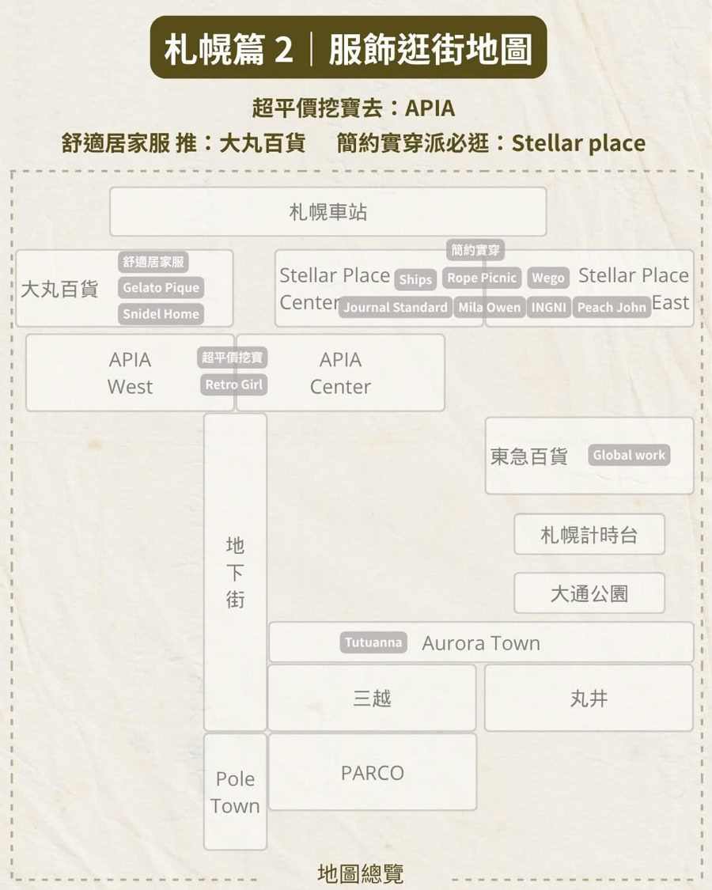
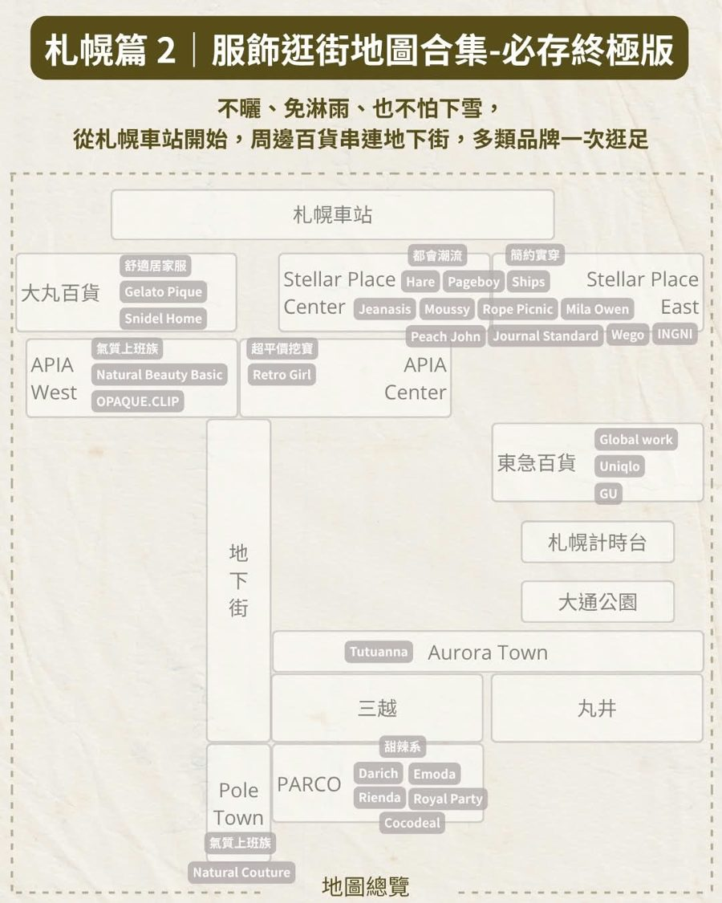
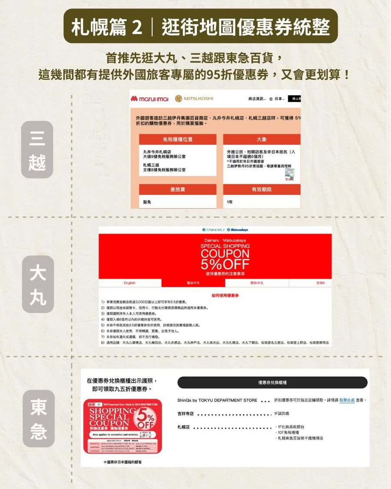
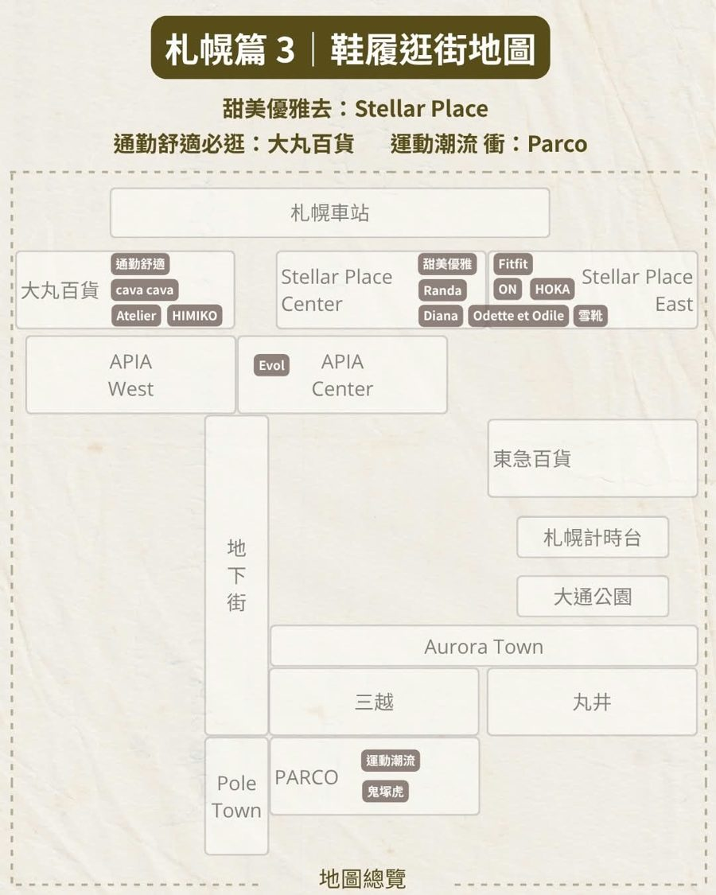
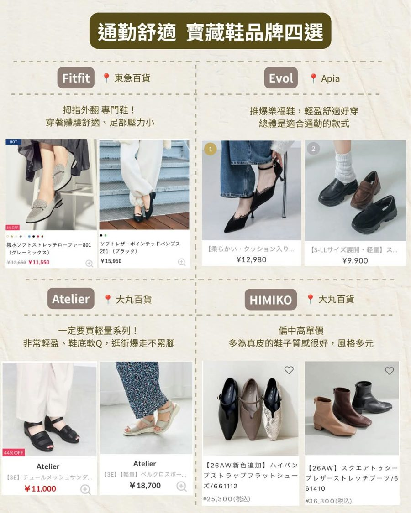
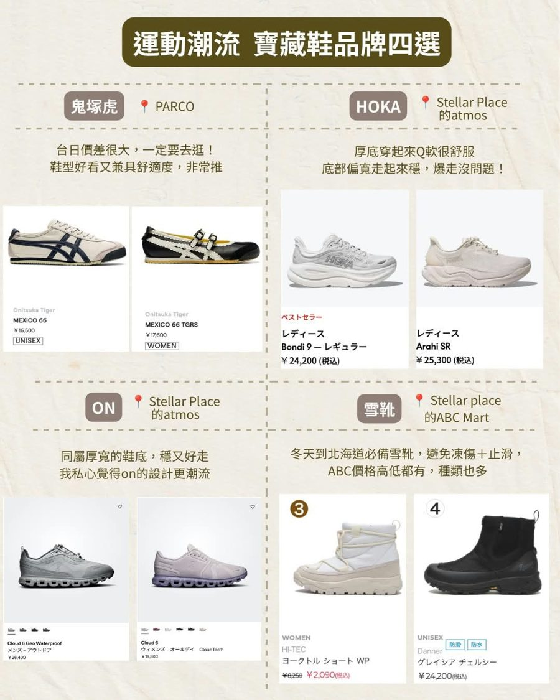
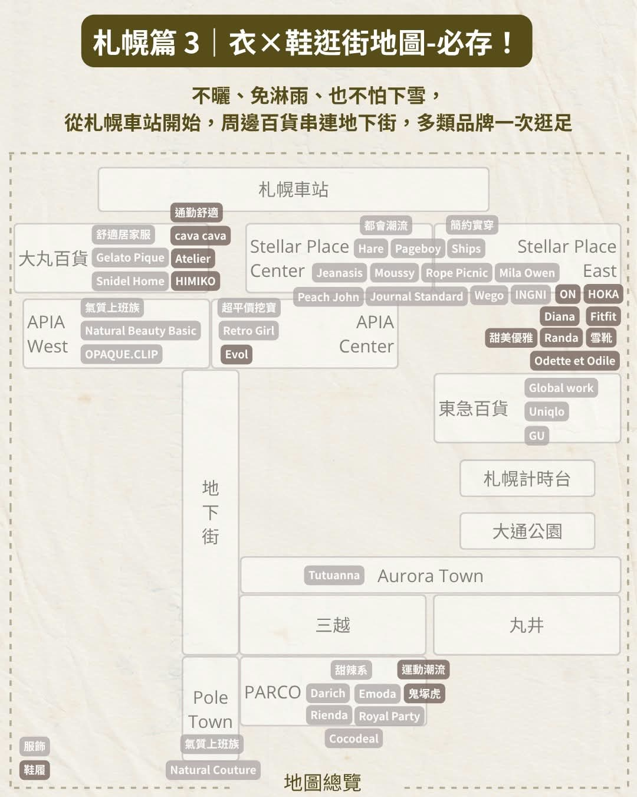
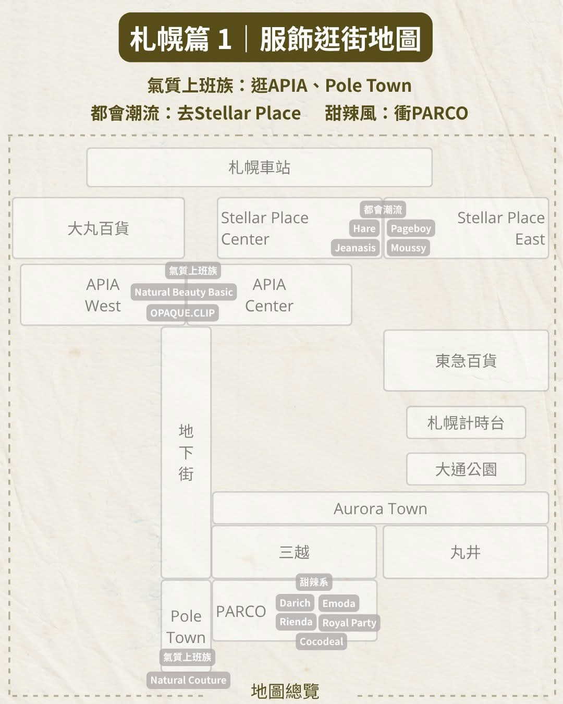
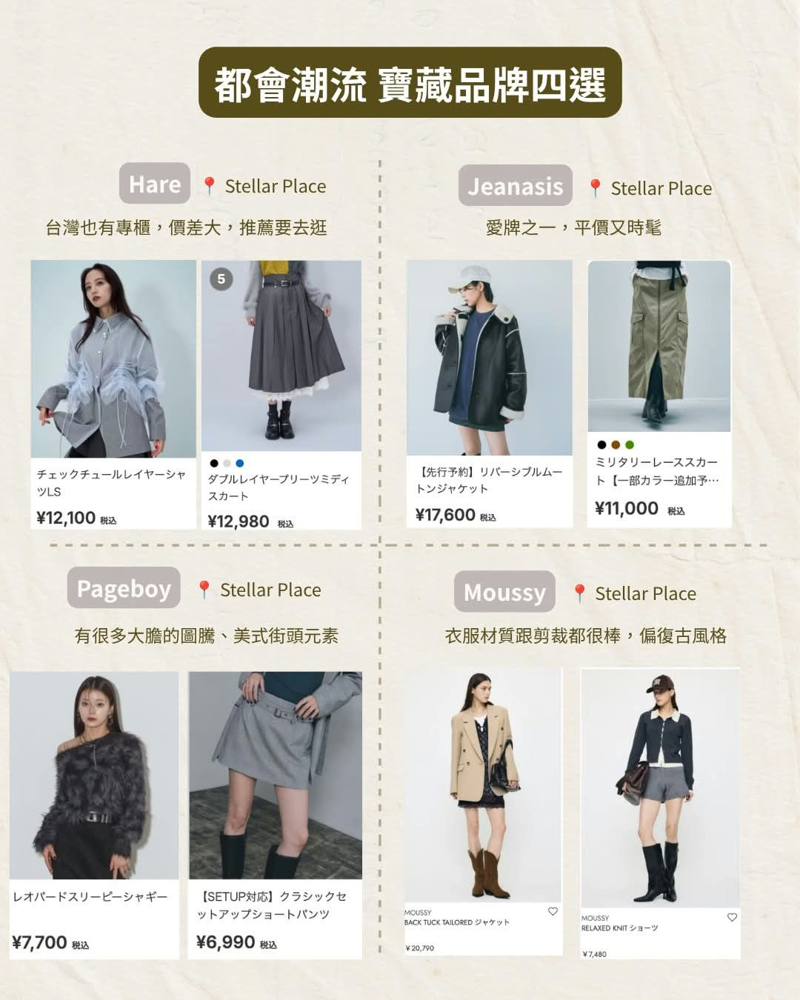
依你提供的 2026 開箱心得整理，按品牌與品類分類。商品照片為風格示意圖，並非各商品的實際包裝；口味評價及購買地點以你提供的分享為準。
這一區是起司、奶香與焦糖風味的重點選擇。
圖片為同類甜點情境示意，非品牌商品照。大丸札幌店 B1 獨家（依分享）。超厚牛奶夾心內餡，中間有苦甜焦糖流心；心得形容很甜、很罪惡，像在吃雪糕。曾排隊約一小時，但分享者認為值得一試。
分享者評價：比 NY 好吃很多。
個人心得：推薦硬脆扎實的沙布列餅乾，搭配生起司白巧克力，口感層次特別。
個人心得：推薦雙重起司風味，鹹甜平衡。
個人心得：推薦分享者特別提到冬天限定款也很好吃；2027 年 3 月是否仍販售需再確認。
季節限定・需確認供貨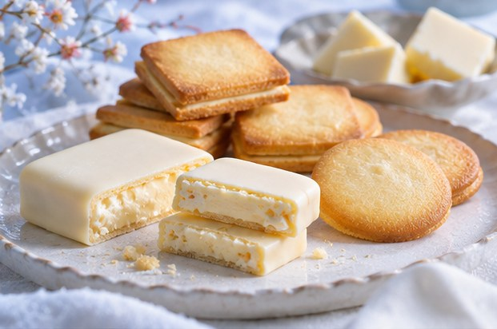
從奶香餅乾、紅豆奶油點心到起司夾心餅乾。
圖片為同類甜點情境示意，非品牌商品照。鮮奶油口感好，紅豆內餡不會太甜。分享者提醒：一次最少需買一盒（4 入）。
個人心得：不錯最少 4 入分享者覺得味道很像「ㄋㄟㄋㄟ補給站」。
奶香系分享者評價普通，認為可以不買。
個人心得：可略過起司味濃郁，分享者覺得比牛奶口味好吃。
個人心得：推薦起司口味分享者特別推薦，形容超好吃。
個人心得：大推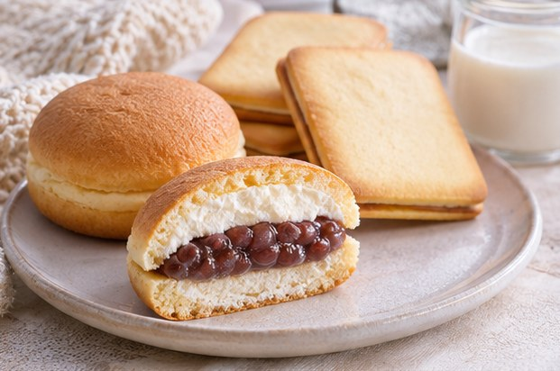
適合挑選小包裝、分送親友的品項。
圖片為同類甜點情境示意，非品牌商品照。包含紅酒、白蘭地、梅酒、薄荷酒、君度橙酒、藍靛果等風味，分享者喜歡不同酒香的微醺體驗。
含酒類風味留意入境攜帶規定分享者評價普通。
個人心得：普通分享者不喜歡餅乾版本，覺得冰淇淋版本比較好吃。
個人心得：不推薦餅乾版適合買回家分享，或留作料理食材。
圖片為情境示意，非品牌商品照。分享者覺得酸甜平衡、清爽好喝。
含酒類留意入境攜帶規定獨立包裝、尺寸超巨大，分享者喜歡濃郁哈密瓜味。
北海道限定適合分送分享者買回家讓媽媽料理，適合當作家常料理伴手禮。
料理包分享者在小樽喝到熱昆布湯，覺得暖胃舒服。
北海道海產乾貨依你提供的開箱心得：除了 BLUE POND 之外，其餘品項大多可在大丸百貨或新千歲機場找到。這是分享者的購買經驗，並非 2027 年 3 月的現貨保證；出發前仍需確認各櫃位、季節限定商品與庫存。
每一天提供代表性景點照片、建議取景方向與拍攝提醒。照片是地點參考，不代表 2027/3 當天的積雪、天候或現場狀況。
以下以你提供的電子機票及訂房畫面為準；訂房人數變更及接駁車仍需飯店回覆。
| 項目 | 去程 | 回程 |
|---|---|---|
| 日期 | 2027/3/7（日） | 2027/3/16（二） |
| 航班 | 中華航空 CI130 | 中華航空 CI131 |
| 航線 | 桃園 T2 → 新千歲 T1 | 新千歲 T1 → 桃園 T2 |
| 時間 | 08:35 → 13:20 | 14:40 → 18:15 |
| 飛行時間 | 3 小時 45 分 | 4 小時 35 分 |
| 航廈 | 桃園 T2 → 新千歲 T1 | 新千歲 T1 → 桃園 T2 |
| 艙等／座位 | O（電子機票所示） | D · 11K（電子機票所示） |
| 託運行李 | 2 PC | 2 PC |
3/7（日）入住－3/9（二）退房 · 2 晚
北海道旭川市宮下通 7-2-5
1 位成人｜單人房｜含早餐｜預付
訂單總額 ¥18,225；折扣 ¥1,239；實付 ¥16,986
訂房憑證：請至 JAPANiCAN 確認信查詢
已訂房抵達時間需更新3/9（二）入住－3/11（四）退房 · 2 晚
北海道有珠郡壯瞥町洞爺湖溫泉 7-1
原訂 1 間客房、2 位成人；目前實際入住 1 人。
懷石晚餐及早餐原訂 2 人份，第二人份餐食／費用調整方式待飯店書面回覆。
預約憑證：tripla 確認信；訂房編號不公開放在網站。
住宿已確認入住人數／餐食待回覆接駁預約待回覆3/11（四）入住－3/13（六）退房 · 2 晚
北海道小樽市稻穗 3-9-1
Booking.com｜1 間客房｜雙人房・禁菸（依訂單畫面）
已訂房入住人數細節需核對訂單3/13（六）入住－3/16（二）退房 · 3 晚
北海道札幌市東區北 6 條東 2 丁目 2-2
Booking.com｜1 間客房；飯店設有頂樓 SPA／大浴場（依訂房及飯店資訊）
已訂房湖之栖：reserve@konosumika.com｜+81 142-82-4121
接駁預約需求：3/9 札幌→飯店、3/11 飯店→札幌；搭乘人數 1 人。狀態：已規劃，尚待飯店確認有位及完成預約。
飯店聯絡時間：09:00–18:00（依公告）。
JR Inn Asahikawa：+81 166-24-8888
小樽住宿及札幌住宿：請以 Booking.com App 訂單頁為準；本網站不存放 QR Code、信用卡或登入資料。
本次全程大眾運輸，不租車、不包車。長距離以 JR／飯店接駁為主。
大通站 31 號出口為最近出口（有手扶梯）；地面後沿左側人行道前往 Kanamoto Hall（札幌市民會館）前集合點。
沒有候車室；請勿進入停車場，公告提醒巴士不會進入停車場接人。
直達湖之栖，公告車程約 2 小時 30 分，預計約 15:30 抵達。
免費、預約制、座位有限且採指定座位。請先上洗手間；巴士準時出發，若遲到或錯過須自行負擔大眾運輸費用。公告不提供新千歲機場、JR 洞爺站及札幌站至飯店的接駁。
依飯店公告回程發車時間。
下車點為北洋大樓（Hokuyo Building）附近，不是札幌車站；再前往札幌站搭 JR 到小樽。
回程同樣預約制。請依當日道路狀況保留緩衝，3/11 小樽行程從下午開始。
約 2.5–3 小時含候車；費用先前估算約 ¥7,000，2027 班次、票價與站牌位置需再核對。需注意 JR 與巴士銜接。
札幌站前往洞爺湖溫泉區的城際巴士可免轉乘，惟需預約且受道路天候影響。先前查到的 ¥3,700 與班次僅為舊時刻表參考，2027/3/9 不可直接視為有效。
道南巴士官方路線／預約 ↗目前行程使用飯店接駁往返洞爺湖後，JR 主要路段為：新千歲→旭川、旭川→札幌、札幌→小樽、小樽→札幌、札幌→新千歲。先前估算單程票合計約 ¥14,940，低於北海道 JR 5 日券約 ¥22,000 的預購價，因此暫以單程購票較合理。
依料理種類整理餐廳，標示地區、招牌料理、每人預算與排隊／預約提醒。價格為目前可查菜單或概算，2027 年 3 月菜單、營業時間及分店狀態仍需出發前確認。
特色／必吃：北海道品牌牛「白老牛」燒肉，主打自家牧場嚴選黑毛和牛；可點白老牛拼盤、特選牛排部位。官方菜單列有特選白老牛拼盤含稅約 ¥13,750，適合想吃好一點的一餐。
重要資訊：可訂位，適合安排晚餐或較正式的一餐。官方介紹平日午餐及晚餐皆營業，週末時段不同；2027/3 實際時段再確認。
特色／必吃：生羊肉成吉思汗燒烤。札幌店官方介紹主打新鮮生羊肉；札幌 2 號店菜單列生ラム成吉思汗約 ¥1,078、大黑羊排約 ¥1,595，可作預算參考。
重要資訊：晚餐店，平日約 17:00 開始、週末假日約 16:00 開始營業；熱門時段建議先查訂位。羊肉類店家會有烤爐與氣味，外套可留意沾味問題。
特色／必吃：招牌「信州」濃厚味噌拉麵；另有辛味噌、鹽味及醬油口味。可搭配炒飯或餃子。
重要資訊：熱門排隊店、不接受訂位；目前公開資訊約 11:00–翌日 1:00，實際可能變動。建議避開晚餐尖峰，排隊時間需留彈性。
特色／必吃：魚介しぼり醤油（魚介濃縮醬油）、弟子屈味噌、北海道全部乗せ味噌拉麵；魚介風味明顯，也有海鮮味噌拉麵。
重要資訊：位於拉麵橫丁，適合薄野晚餐或宵夜。官方公布時段依平日、週末略有差異，部分時段中間休息；信用卡及電子支付資訊以現場為準。
特色／必點：以蝦頭熬製的濃厚蝦湯拉麵，可選「そのまま／ほどほど／あじわい」湯頭濃度，搭配鹽、味噌或醬油口味；初訪可試味噌蝦湯。
重要資訊：總本店在薄野西側，與札幌站商圈有距離；熱門時段可能排隊。總本店目前資訊約 11:00–翌日 3:00，湯售完可能提早結束；以出發前官方公告為準。
特色／必點：札幌代表性味噌拉麵名店，味噌湯頭香濃、平衡度高；亦有鹽味與醬油口味。
重要資訊：熱門店，官方提醒需依序排隊、不宜占用人行道。週一公休，其他每月另有不定休；週二至週四及週日主要營業午餐，週五、週六另有晚餐時段。距札幌市中心需搭地鐵。
特色／必點：函館代表性鹽味拉麵，湯頭清澈但有鮮味，搭配特製直麵；可點味彩鹽拉麵或特製鹽拉麵。
重要資訊：本店位於五稜郭，適合搭配五稜郭公園／塔行程；官方列本店 11:00–20:25（L.O.），第四個週三公休（遇假日順延）。
特色／必點：旭川經典醬油拉麵，豚骨與魚介風味交織；推薦旭川醬油拉麵，也可選鹽、味噌及叉燒版本。
重要資訊：官方店舖資訊列午晚餐分段營業，定休日不定；位於買物公園附近，適合旭川站周邊步行用餐。
特色／你的推薦：夫妻經營的小店，招牌叉燒拉麵份量足；可留意蒜香叉燒味噌拉麵、醬油拉麵及鰹魚飯。
重要資訊：不接受預約，座位以吧台為主。午餐約 12:00 起、晚餐約 17:00 起，皆可能售完提早打烊；週二公休，建議不要排在小樽行程太晚的時段。現金為主。
特色／必吃：根室與道東近海直送魚介，依季節供應旬魚；可留意花咲蟹軍艦、紅鮭筋子醬油漬、鮭魚湯等季節品項。
重要資訊：11:00–22:00（L.O. 21:30，依商場公告）；不接受座位預約，現場使用發券機候位。位於札幌站商場，適合購物前後安排，但熱門時段等候可能較久。
特色／必吃：以北海道近海、北海道產魚介為主。官方菜單例：北海道產干貝一貫約 ¥297、北海道產章魚約 ¥297–352、鮭魚約 ¥253，鮭魚卵軍艦約 ¥594；依季節與供應調整。
重要資訊：多數分店約 11:00–22:00（L.O. 21:30），不接受座位預約；分店多在市區外圍，需依交通路線選擇。北8条光星店地址為札幌市東區北8条東5丁目19-1。
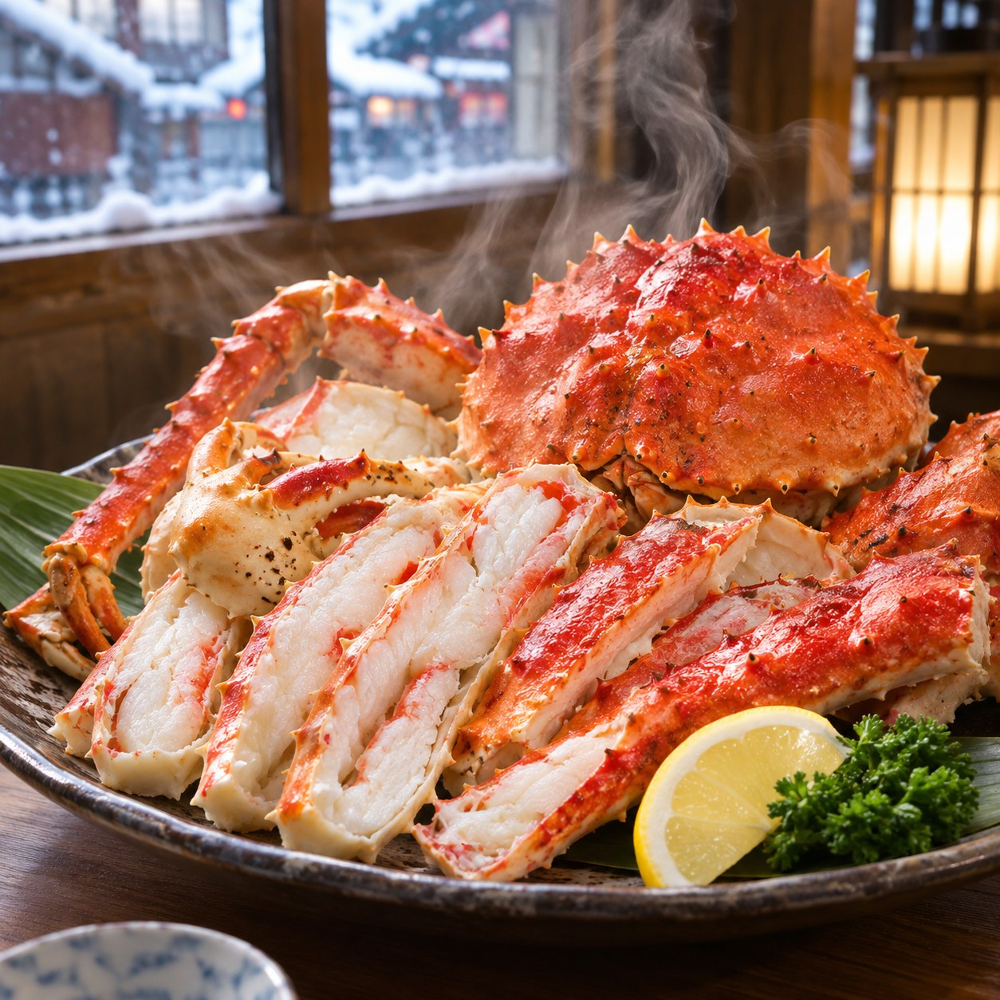
特色／必點：湯頭以日式高湯與香料調和。官方菜單目前可見價格約 ¥1,390–1,640，另有炙燒起司 topping ¥120。你特別備註想點牛肉款，並加炙燒起司；但目前公開菜單未見牛肉主餐，2027 菜單／牛肉品項需再確認，炙燒起司可作加點。
重要資訊：你提供的地圖是 GARAKU 札幌本店；現場候位、不先當作可預約。官方時段約 11:30–15:30、17:00–21:00，湯品售完可能提前結束，出發前看當日公告。
特色／必點：串燒食材後放入湯咖哩，招牌可留意北海道產豬角煮、雞腿與蔬菜；蔬菜色彩豐富，適合與 GARAKU 比較不同湯頭。
重要資訊：官方標示不接受事前訂位；現金、PayPay，暫不收信用卡。熱門時段可能候位，與 GARAKU 擇一或分日安排較不趕。
特色／必點：以螃蟹料理為主，包含雪蟹／帝王蟹會席、蟹鍋、蟹刺身、烤蟹及蟹肉壽司。適合想一次吃多種蟹料理的正式餐。
重要資訊：有套餐及單點，預算落差大；建議先看會席內容並預約，若有長輩同行可詢問座位型態。價格依蟹種、季節與套餐改變。
特色／必點：主打無添加生海膽，推薦海膽丼、海膽拼海鮮丼；海膽價格會隨季節、產地及供應量變動。
重要資訊：熱門海鮮名店，建議早上前往並預留候位時間。函館本店目前以早午餐營業為主（約 8:30–15:00、L.O.14:30），週三公休；晚餐需改至步行約 3 分鐘的函館站前店。海膽供應及品種每日可能不同，點餐前先確認當日價格。
特色／必點：招牌「若雞半身炸」外皮酥脆、肉汁豐富；可搭配壽司或炸雞丼，若多人同行可分享半身炸。
重要資訊：官方觀光資訊列營業 11:00–21:00（L.O.20:30），不定休。店內也有壽司、海鮮等品項；適合排在小樽堺町通行程前後。
特色／必點：人氣第一名「中華雞腿漢堡（チャイニーズチキンバーガー）」：炸雞腿搭配甜鹹醬汁；可加點拉奇薯條及飲料。
重要資訊：函館在地連鎖，分店各有特色，部分店有主題裝潢。函館站前店步行約 2 分鐘，方便抵達／離開函館時用餐；菜單及營業時間依分店而異。
特色／必點：帶廣名物豚丼，豬肉以炭火網烤，刷上秘傳甜鹹醬汁；可依食量選四枚、六枚等肉片份量。
重要資訊：本店位於帶廣站旁，適合搭 JR 抵達或離開時用餐。官方目前列午晚餐分段營業、每週四休，實際依車站設施公告調整。
特色／必點：炭火串燒，鳥精肉、雞心、雞皮、豬肉串、雞肉丸及五本／八本綜合串燒組合；適合晚餐或想吃多種小菜。
重要資訊：居酒屋型態，另有釜飯、炸物及飲品。熱門晚餐時段建議訂位；串燒單價親民，但加上飲料及小菜後人均會提高。
特色／必點：大黑屋發源於旭川，以肉厚、柔嫩的生羊肉聞名；可選肩里肌、腿肉、羊排及綜合拼盤。
重要資訊：你這次指定的是旭川店，與前面已收錄的札幌壹號店分開標示。此品牌有多個店舖／分店，2027 年出發前務必確認實際營業店址、營業日及候位方式。
特色／必點：札幌經典成吉思汗烤羊肉，使用中央凸起的圓形鐵鍋烤羊肉與洋蔥；推薦羊肉、羊肉加蔥及追加蔬菜。
重要資訊：熱門店，晚餐尖峰可能排隊；部分店舖有不同營業時間及候位規則。羊肉烤爐氣味較重，外套建議使用可收納袋。
特色／必點：雙層起司蛋糕 Double Fromage、現場甜點與咖啡；本店可安排內用甜點休息。
重要資訊：適合排在小樽堺町通購物路線；熱門時段咖啡座可能需等候。蛋糕外帶需留意保冷及返飯店時間。
特色／必點：札幌本店有一樓販售區及二樓喫茶室；可試吃現場限定或需冷藏的「マルセイアイスサンド」、雪こんチーズ，以及季節甜點。
重要資訊：冰淇淋夾心不適合長時間攜帶；喫茶室不接受預約，官方列札幌本店喫茶室週三公休，出發前確認當日營業。
特色／必點：北海道甜點品牌，推薦年輪蛋糕「妖精の森」、泡芙及本館咖啡廳蛋糕；咖啡廳另有蛋包飯、義大利麵及聖代。
重要資訊：建築本身是歷史建物，適合購物兼休息。官方咖啡廳目前週二公休且不接受座位預約；咖啡廳餐點約 ¥1,200–1,750。
特色／必點：現烤起司塔，外層酥香、內餡濃郁；亦有季節限定烘焙點心與乳製品甜點。
重要資訊：以外帶為主，適合購物途中買一份現吃；門市、商品及售價會因分店與季節不同，請以現場為準。
特色／你的推薦：生牛乳丹麥捲（生デニッシュ），丹麥麵包層次酥香，搭配 LeTAO 原創鮮奶油；口味清爽、不會過甜，適合現場趁新鮮吃。
重要資訊：LeTAO 專門丹麥店，店內／戶外座位依季節供應。位於小樽堺町通，建議和音樂盒堂、LeTAO 本店、北菓樓小樽本館排在同一段散步路線。
特色／你的推薦：招牌奶油泡芙，推薦選脆皮款；外層酥脆，內餡奶油濃郁、帶冰淇淋般的口感。也可看看年輪蛋糕「妖精の森」。
重要資訊：此卡是小樽本館，與札幌本館及大丸札幌店分開標示。官方資料列地址為堺町7-22，靠近堺町通景點群；泡芙品項與供應以當日現場為準。
特色／你的推薦：脆皮泡芙及北海道奶油甜點；若在札幌活動，可依行程選札幌本館或札幌站大丸百貨 B1 分店。
重要資訊：札幌本館有咖啡廳及歷史建築空間；大丸店更適合札幌站購物時快速外帶。兩個據點商品與供應可能不同，想吃特定脆皮泡芙建議當天先確認。
特色／你的推薦：人氣麵包前五名可優先挑選；你特別提到北海道牛角包很驚喜，建議到店先看當日人氣榜及出爐品項。
重要資訊：店內有少量內用座位，位於札幌站旁東急百貨 B1，適合安排在札幌站購物日或早餐外帶。人氣品項及價格依當日供應為準。
特色／你的推薦：和牛料理，肉質細嫩、油花香氣足；價格不算便宜，但依你的心得值得安排。可留意和牛壽喜燒、牛排及和牛御膳等當季菜單。
重要資訊：此處先以堺町通店收錄，方便與小樽甜點及購物景點串連。和牛黑澤在小樽另有本店、車站前店、運河店等據點；不同分店菜單、營業時間與價位可能不同。官方提醒不接受透過 AutoReserve 的預約。
你文字提到「薄野版一粒萬福」，但第一個地圖短網址目前解析出的店名是 Cafe Den，無法確認兩者是否同一間店，因此先保留原始稱呼與地圖資訊，不替你猜測料理或價格。確認後再補上招牌菜、預算及營業資訊。
勾選狀態會保存在目前瀏覽器。尚未確認的事項不會自動視為完成。
0 / 0 已完成
建議將本頁加入手機主畫面，旅途中可快速查看。每日行程可直接切換日期；地圖按鈕會開啟 Google Maps。行前清單勾選狀態只保存在目前裝置的瀏覽器。